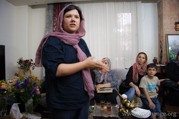
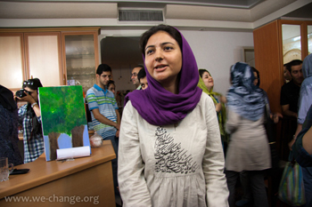
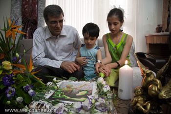
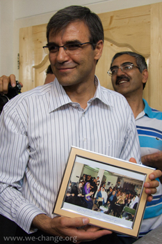

|
|
دیدار فعالان کمپین با خانواده مومنی و ستوده: جشن تولدی این سوی دیوارهای زندان
سه شنبه10 خرداد 1390
تعییر برای برابری - مریم زندی - نهم اردیبهشت ماه همزمان با سالروز تولد نسرین ستوده و عبدالله مومنی، فعالان جنبش زنان از جمله فعالان کمپین یک میلیون امضا، مادران صلح و مادران عزادار(پارک لاله) و اعضای کانون وکلا با خانواده های این دوفعال جنبش زنان و دانشجویی دیدار کردند و سالروز تولد آنان را گرامی داشتند.
در این دیدار "فاطمه آدینه وند" همسر عبدالله مومنی خبر از ملاقات خود با همسرش را داد و گفت : امروز دوشنبه كه با گل و شيريني براي تولد مومني به ديدار او رفتم. خيلي اصرار داشت كه حتما گل را پنهان كنم و كسي در زندان متوجه نشود كه تولدش است. عبدالله تاکید داشت كه حتما به اين جا بيايم و تولد خانم ستوده را به خانواده او تبريك بگويم و آرزو كرد كه سال ديگر همه گي در كنار هم این روز را جشن بگيريم.
خانواده این زندانی جنبش زنان با امید به آزادی هر چه سریعتر نسرین ستوده، این دیدارها را باعث دلگرمی خانواده زندانیان دانستند. موسی خندان در این جمع گفت: «كسي كه داخل زندان است، به پشتوانه معنوي دوستانش امكان استقامت می یابد. اين روحيه تك تك دوستان باعث صبر و استقامت ايشان شده است.»
رضا خندان همسر نسرین ستوده درباره دادگاه نسرین درکانون وکلا توضیح داد و گفت :« به پرونده نسرين به دليل اين كه از محتويات پرونده نه خود او و نه وكيلش مطلع نبودند فعلا رسیدگی نشده است و بعد ازاینکه محتویات پرونده در اختیار آنها قرار بگیرد به این پرونده رسیدگی خواهد شد». مادر رضا خندان که چند ماهی به یاری پسرش و بچه ها شتافته است ارزو کرد که نسرین زودتر به خانه اش برگردد.
در این جمع صمیمی با آنکه این دو فعال سخت کوش جنبش های مدنی حضور نداشتند اما سخن درباره آنان و تلاش هایشان فراوان بود. هریک از حاضران جای خالی آنان را با بیان گوشه ای از مشاهدات یا تجربیات شان از روش، منش و فعالیت این دو زندانی مدنی ایران پر کردند.
زهره تنكابني، فخری شادفر، ناهید جعفری، جلوه جوهری، ناهید کشاورز، مینو مرتاضی، ژیلا بنی یعقوب، دلارام علی، فریده ماشینی، مریم زندی، رها عسگری زاده، گیتی ستوده، حامد توسلی، آرش نصیری،منصوره بهکیش، رزا قره چولو، هر یک سخنانی را درباره نسرین ستوده و تاثیر مقاومت او گفتند.
در پایان این دیدار نیما و مهراوه فرزندان نسرین ستوده کیک تولد او را بریدند.
عکس : رها عسگری زاده



